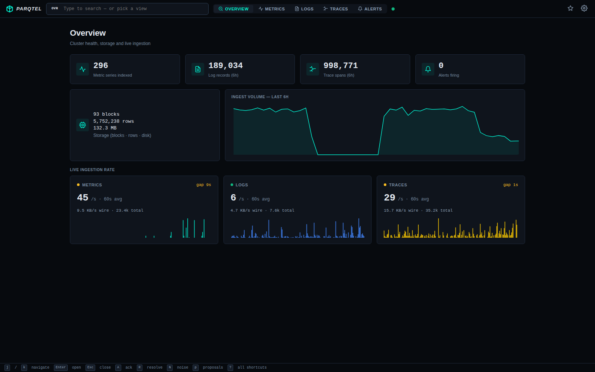

Collect OpenTelemetry
Ingest metrics, logs, and traces over OTLP using your existing instrumentation.
Collect OpenTelemetry data, explore it in a built-in console, and store it efficiently as Apache Parquet. No external datastore required.

/ui.Explore metrics, inspect traces, and review alerts in the same console. No separate UI service to deploy.
Collect telemetry, query it with familiar tools, and keep storage simple.
Ingest metrics, logs, and traces over OTLP using your existing instrumentation.
Explore data in the built-in console or connect Grafana through the Prometheus-compatible API.
Compressed columnar blocks and a crash-safe write-ahead log keep storage compact and durable.
Define YAML threshold rules over metric samples and track alerts through pending, firing, and resolved states.
Run a single container to inspect application telemetry without deploying a separate datastore.
Collect signals close to your services with a small binary and local-first storage.
Explore metrics, logs, and traces in one console, with MCP tools for AI-assisted investigation.
Reported results from a 15-minute mixed-signal workload on commodity hardware.
Results depend on hardware, workload, and configuration. Read the methodology and measurements →
Ingestion, storage, querying, and alerting run in one process. MCP servers run separately.
Your OpenTelemetry SDK or Collector sends metrics, logs, and traces to Parqtel over gRPC or HTTP.
A live buffer makes data queryable. A write-ahead log protects writes, and data is flushed into compressed Parquet blocks.
Use the console, supported Prometheus queries, Grafana, or MCP tools to inspect your telemetry.
Use Model Context Protocol tools to query data during an investigation.
Run metric queries, search logs, and inspect alert history through parqtel-mcp-parqtel.
Slack, PagerDuty, Jira, Notion, Discord, and Google Docs servers declare tool schemas but are not yet wired to their providers.
Review network access and memory requirements before running a shared instance.
docker run -d \
--name parqtel \
-p 8080:8080 \
-p 4317:4317 \
-v parqtel_data:/data \
ghcr.io/parqtel/parqtel-oss:0.3.1
curl http://localhost:8080/health # {"status":"ok"}
curl http://localhost:8080/ready # {"status":"ready"}make dev-setup # copies .env, starts stack
# → Parqtel :9090 · Grafana :3000 · Prometheus :9091
# or from source
cargo build --release && ./target/release/parqtel serve